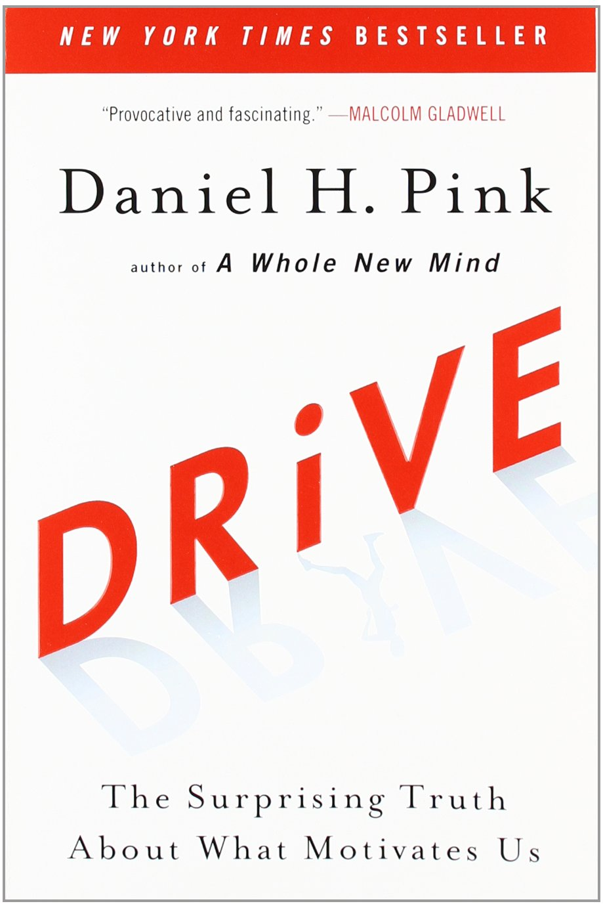

Je connais peu de développeurs et développeuses heureux.
Autonomie
But
Maîtrise

Nous devons nous changer nous même
Nous devons le faire en tant que communauté
On va faire que dans les rythmes scolaires [...] on puisse apprendre ce qu'on appelle le codage
Un changement ne peut pas être imposé
L'ordre des développeurs
Loi le Chapelier
14 juin 1791
Pirates de tous les pays - Marcus Rediker
La mission d'un ordre
Régulation de l'accès à la profession
Contribution à la formation permanente, suivi de l'obligation de formation continue
Représentation de la profession à l'égard des pouvoirs publics
Promotion de la profession
Organisation de la concurrence entre ses membres sur une base équitable, non vénale et respectueuse des règles de l'art, tout en limitant les concentrations et les positions dominantes
Fonction juridictionnelle
Fonction arbitrale
Contrôle du respect des clients dans le sens de la défense de l'intérêt général
Postulats initiaux
Ouvert à toute personne étant payée pour développer
Décision par concensus, le vote est proscrit
Décision prise en assemblées constituantes
Pour les décisions «critiques», assemblée par tirage au sort
Tout est sur github
Le fork est permis, autorisé, encouragé
Votre mission
Organiser des assemblées
Proposer / prendre des ordres du jour sur l'organisation GitHub